Barefoot was right in theory and brutal in practice. Here are the five places it went wrong on a real floor, and the part of [vrsn] built to answer each one.
1
Concrete doesn't give. Your heel did.
On grass or a trail, the ground takes part of every step. Concrete takes none of it. With nothing between your heel and the floor, the band under your arch, the plantar fascia, absorbs the whole impact, step after step, until it is inflamed. That is where the heel pain came from. It was never the walking.
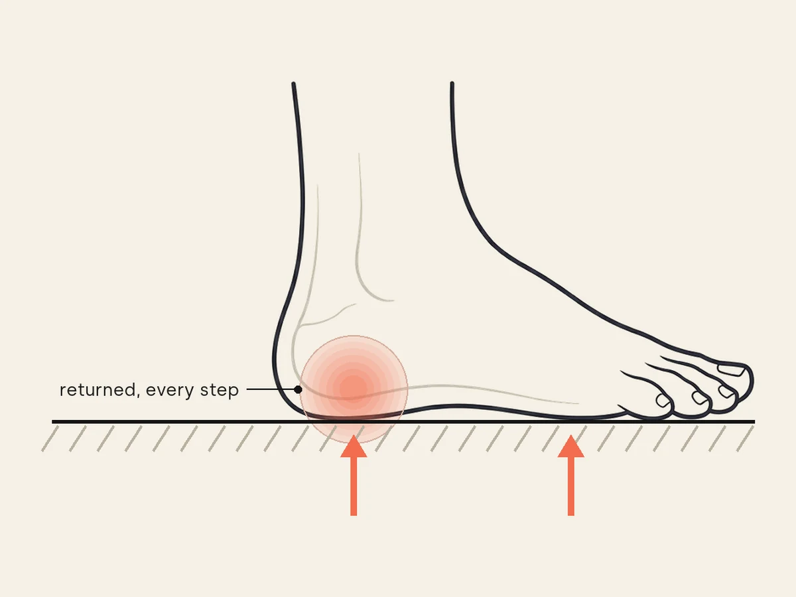
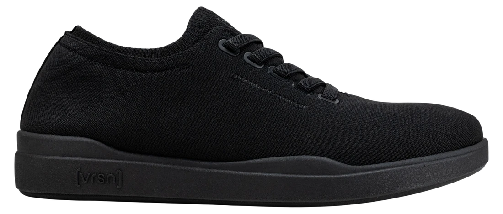
Dual-density midsole
The part that answers it: the dual-density midsole.
A dense base takes the concrete. A softer layer on top takes the landing. Your foot still bends and still feels the ground. It just stops being the shock absorber.
2
Zero drop pulled on your heel cord.
Almost every shoe you wore before lifted your heel a little. Zero drop set it flat on the floor. Every step now stretches the Achilles and the calf further than they were used to, and on a hard surface the load comes back through the same spot thousands of times a day. Barefoot shoes did not strengthen that tendon. They loaded it.
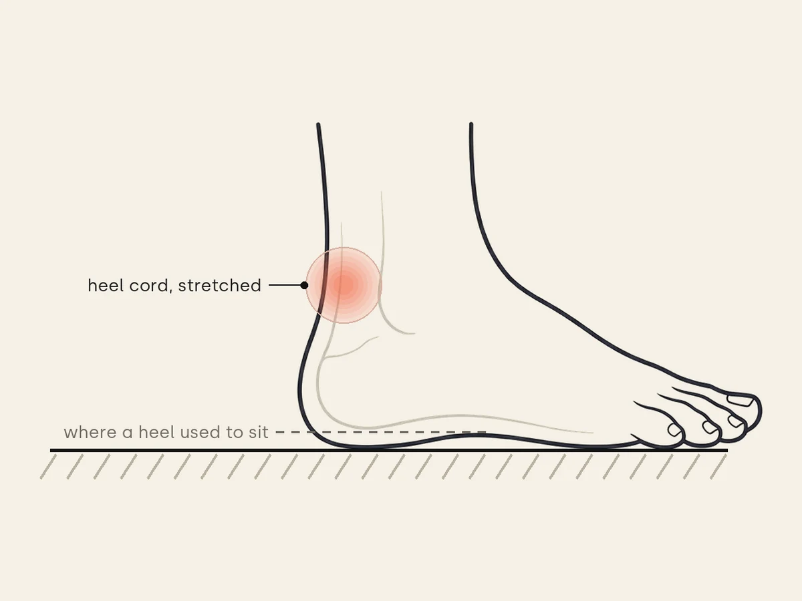
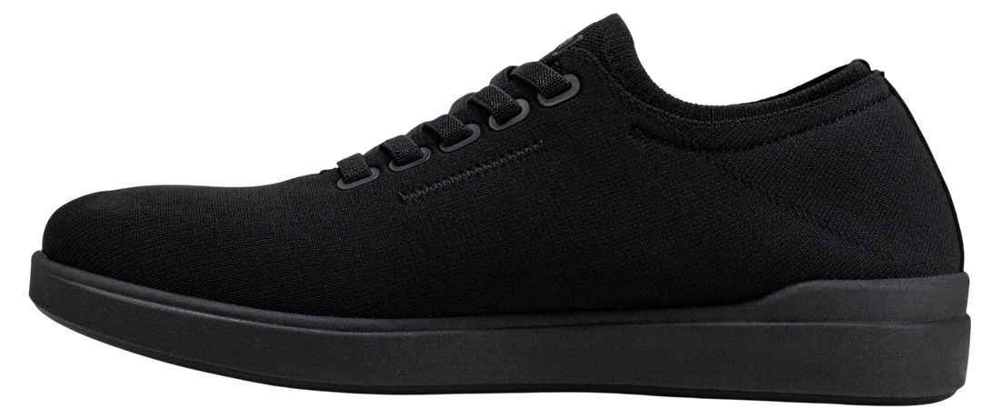
Contoured arch, low profile
The part that answers it: the contoured arch.
The contoured arch and the dual-density midsole redistribute pressure away from the Achilles tendon. The profile stays low, so the ground feel you switched for stays too.
3
It was never the miles. It was the hours.
Barefoot holds up in motion. It fails standing still. Eight hours at a counter, a bench or a kitchen floor is a static load, and a foot with nothing under it carries all of it on two points: the heel and the ball of the foot. By hour six the arch has sunk and both points are burning. Standing still is the load, not the walking.
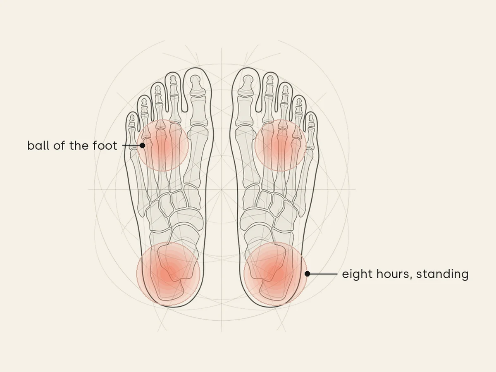
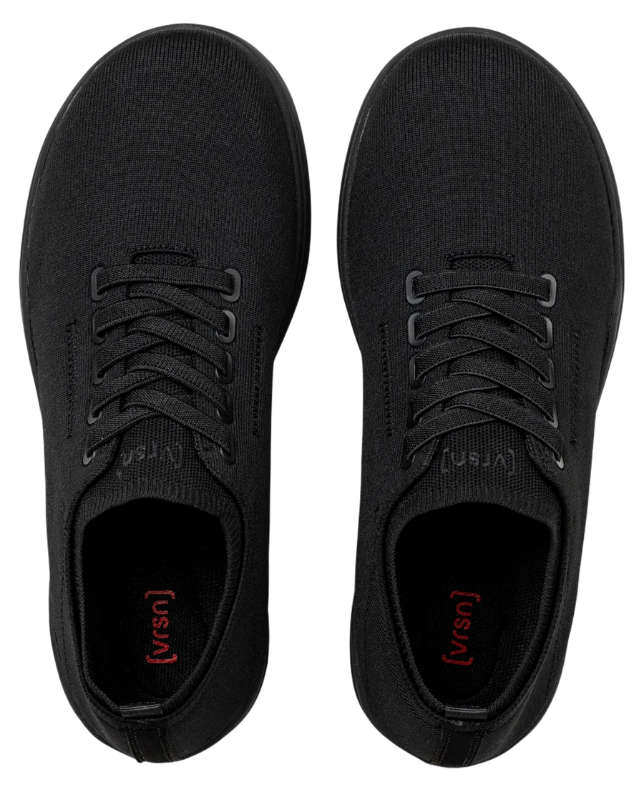
Arch support, wide toe box
The part that answers it: targeted arch support.
Cradles, doesn't cage. Firm enough to hold the arch up through hour eight, soft enough to let your foot move naturally. The muscles you woke up keep working. They just stop working alone.
4
The dose was overnight. Your strength wasn't.
The barefoot pitch assumed months of slow build-up. Most people switched in a week. Muscles and tendons that had been supported for decades were handed full load on day one, on concrete, and the small tears added up faster than the strength did. That is the 18-month rehab tax. It is not a sign you did it wrong. It is what the dose does.
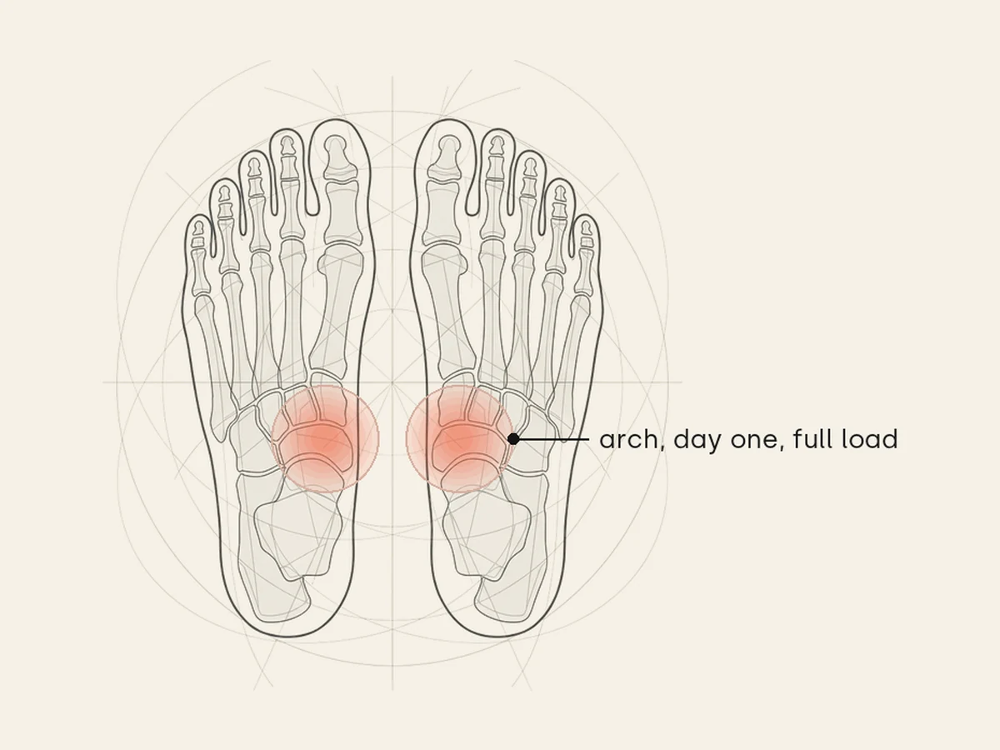
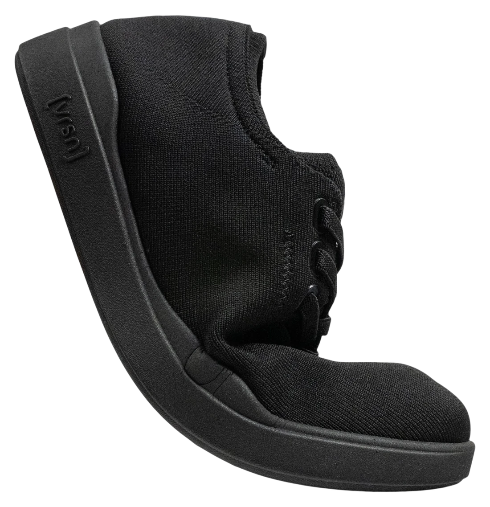
Bends where your foot bends
The part that answers it: structure while your foot rebuilds.
No adaptation protocol, no mileage ramp. The wide toe box and the flexible front feel familiar from day one, while the midsole takes over the impact your soft tissue was absorbing. You can switch immediately.
5
Barefoot put all its attention on the front of your foot. The pain was at the back.
The whole pitch was about the toes: spread them, free them, let them grip. Fine. But the toe box was never where it hurt. Your heel and your arch got nothing, and no amount of toe room reaches them. You do not need the other extreme. You need the middle.
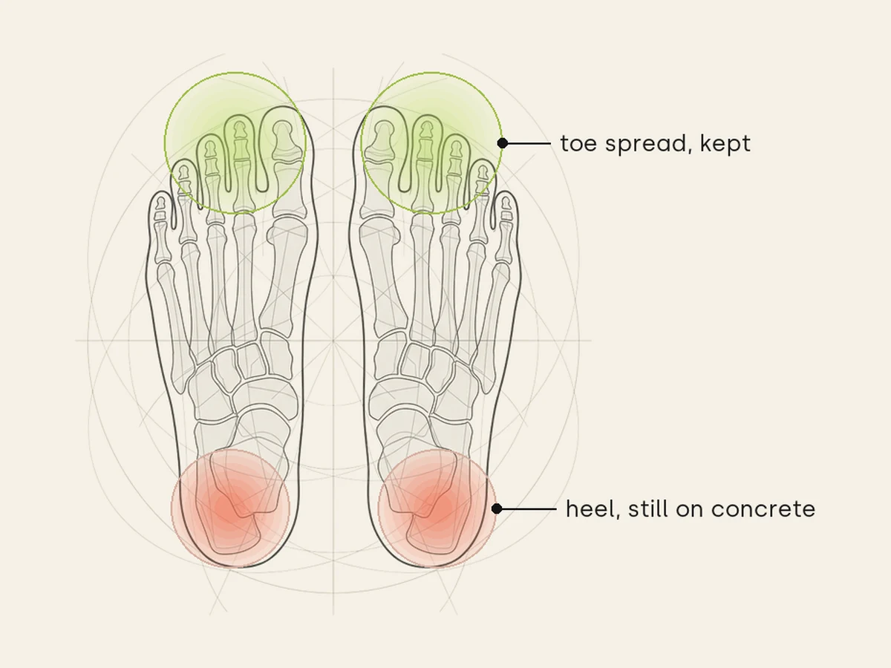
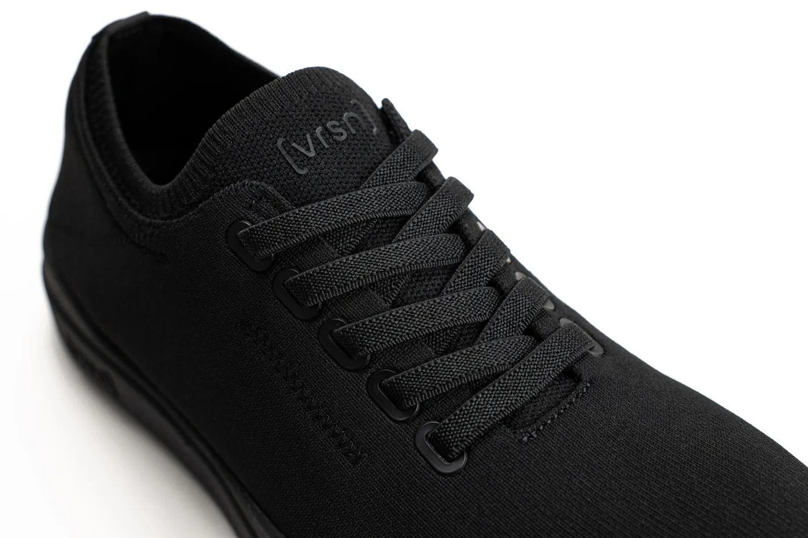
Wide toe box, standard on the 2.1
The part that answers it: a wide toe box with a base under it.
A genuinely wide, foot-shaped toe box, standard on the 2.1, so toe spread stays. Underneath it, the base your heel and arch never had.
You need the middle, not the other extreme.
Thick cushion re-numbs the foot you spent months waking up. Zero drop hands the floor straight back. [vrsn] sits in the centre: firm enough to protect your arch, soft enough to let your foot move naturally.
Toe spread stays
Ground feel stays
Fascia protected
No rehab tax
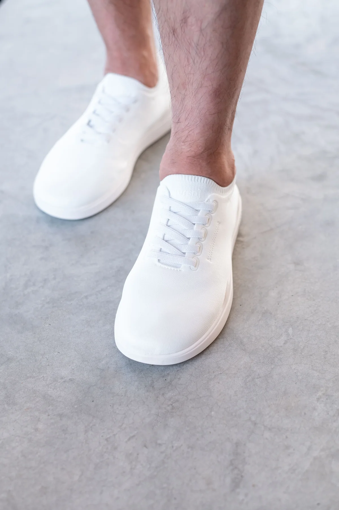
On concrete, in the white colourway.
“[vrsn]’s design gives my patients immediate relief while letting their feet rebuild strength naturally. It’s the first shoe I’ve found that does both.”
Dr. D. Ashford, DPM Doctor of Podiatric Medicine
4.9 (2,508 reviews)
Pain Relief Sneaker2.1
Wide toe boxZero break-inPodiatrist approvedMachine washable
Dual-density midsole, developed with input from over 30 podiatrists and pedorthists
US sizes. Women 6 to 12.5, Men 4 to 11. Between sizes? Take the size up. Exchanges are free.
Pair 2 White
100-Day At-Home Trial
Ships by — free shipping
Free returns and exchanges
2,508 verified reviews.
Real people on hard floors all day. Here is what they say after switching to [vrsn].
MV
Marisol V.
Cafe owner, concrete floors
Six a.m. to close on concrete, every day. First shoes where mid-afternoon doesn't feel like punishment. My ankles stopped swelling by week two.Verified buyer
RW
Renee W.
Warehouse lead, 12 hr shifts
I'm on concrete for twelve hours and I used to dread the last two. Three weeks in and my heels don't burn when I get home anymore. I bought a second pair for my sister.Verified buyer
KB
Kate B.
15,000 steps a day
My watch says 15,000 steps. My feet finally stopped keeping count. Zero break-in, comfortable from the first morning.Verified buyer
PS
Priya S.
Teacher, on her feet all day
I teach standing up, all day, every day. The wide toe box means my toes aren't crushed by third period, and my arches don't ache on the drive home.Verified buyer
OP
Olivia P.
Verified buyer
They are so comfortable I forget I am even wearing them. First shoe that still feels good at the end of a long day.Verified buyer
TH
Tom H.
Warehouse, double shifts
Doubles used to wreck my knees and lower back. Two months in these and stairs don't scare me anymore. Heavier guys, these hold up.Verified buyer
Just try them. At home. For 100 days.
Buying shoes online is a leap, and switching out of barefoot is a bigger one. So you get a 100-day at-home trial with every order.
Wear them on the floors that hurt. If they are not the most comfortable shoes you own, send them back for a full refund. Returns and exchanges are free.
Questions, answered.
I've been wearing barefoot shoes. Will [vrsn] feel too bulky?
No. [vrsn] is not a traditional orthopedic shoe. It has a low-profile midsole with targeted arch support and a wide toe box. You keep the ground feel and toe splay you are used to, with the shock absorption and arch support your feet need on concrete.
Do I need to transition slowly from zero-drop, or can I switch immediately?
You can switch immediately. [vrsn] is designed as the landing spot after barefoot: the wide toe box and flexible front feel familiar from day one, while the dual-density midsole takes over the impact your fascia has been absorbing. No adaptation protocol, no mileage ramp.
Will [vrsn] undo the strength I built going barefoot?
No. The toe box still lets your toes splay and the front still flexes, so the muscles you woke up keep working. What changes is the impact on concrete: the midsole absorbs the shock your soft tissue was eating, which is what kept injuring you.
Why did my barefoot shoes cause plantar fasciitis?
Zero-drop shoes remove all support and cushioning, forcing your plantar fascia to absorb 100% of impact on hard surfaces. Over time, the fascia becomes inflamed. [vrsn] provides just enough support to protect the fascia while still letting your foot muscles engage and strengthen.
Will this help with Achilles tendon pain from barefoot shoes?
The contoured arch and dual-density midsole redistribute pressure away from the Achilles tendon. Try them on the floors that hurt: the 100-day trial covers it.
Are your shoes podiatrist-recommended?
Yes. We developed these shoes with input from over 30 podiatrists and pedorthists. They include the features foot specialists consistently recommend: shock absorption, subtle arch support, breathable materials, a flexible toe box and a stable structure.
Can I return or exchange my shoes if they don't fit?
Yes. Return or exchange within the 100-day at-home trial. Wear them as much as you like, and if they are not right we take them back for a full refund. Returns are free.
How long does shipping take?
US orders ship within 1-2 business days and typically arrive in 4-6 business days. Free standard shipping is included on every order.